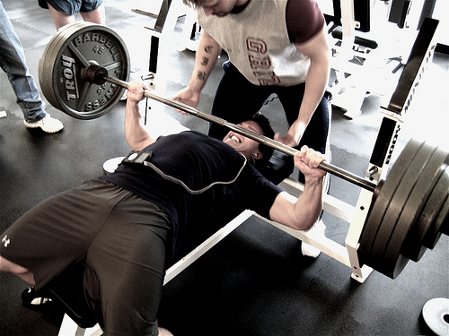
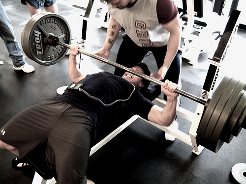
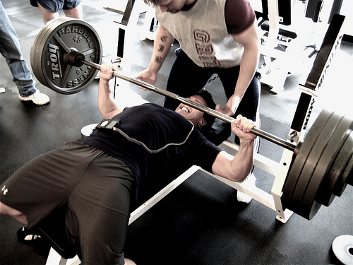

Este ejercicio mejora la flexibilidad, aumenta la fuerza y reduce el riesgo de caídas. Los niños lo realizan con frecuencia en parques infantiles y los adultos moviendo objetos contra resistencias, haciendo flexiones o levantando pesos (pesas o máquinas en un gimnasio).Los efectos de este tipo de ejercicio se limitan a los músculos que se han utilizado para realizarlo. Es por ello importante realizar actividades en todos los músculos importantes del cuerpo: piernas, caderas, espalda, abdomen, pecho, hombros y brazos.
